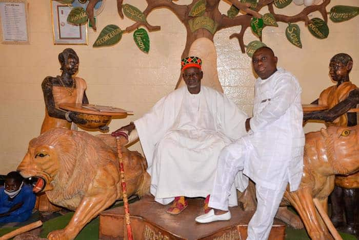
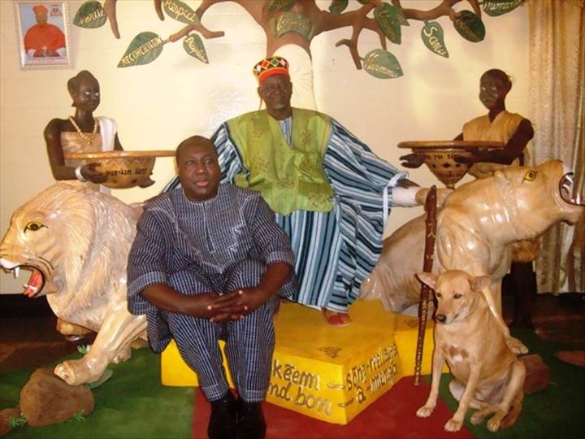

🇧🇫 🇧🇫 🇧🇫 🇧🇫 🫶🫶⚔️PALAIS DE MOGHO NAABA ⚔️🫶🫶🇧🇫 🇧🇫 🇧🇫 🇧🇫
🇧🇫 🇧🇫 🇧🇫DESCRIPTION DU Palais du Mogho Naaba 🇧🇫 🇧🇫 🇧🇫
Au cœur vibrant de Ouagadougou, là où le passé embrasse le présent avec dignité, s'élève un lieu sacré, discret mais majestueux : le Palais du Mogho Naaba. Ce n’est pas un simple bâtiment. C’est une mémoire vivante, une âme enracinée dans la poussière rouge du pays Mossi, un sanctuaire d’autorité, de sagesse et de tradition.
Dès que l’on franchit ses abords, un silence particulier enveloppe le visiteur. Ce n’est pas le silence du vide, mais celui du respect, de l'histoire dense, du murmure des ancêtres. L’air y est plus dense, comme chargé de récits invisibles, d’honneurs anciens et de prières murmurées.
Le palais, tout en simplicité extérieure, dissimule une profondeur royale. Ses murs ont vu défiler des générations de rois, d’ambassadeurs, de griots porteurs de paroles et de porteurs d’espoir. Ici, le temps ne passe pas : il se recueille.
Mais c’est surtout le vendredi matin, au lever du jour, que l’enchantement atteint son apogée. Le cérémonial du "faux départ du Mogho Naaba" s'y déroule comme un théâtre sacré. Les tambours résonnent dans l’âme, les chevaux piaffent, les dignitaires s’inclinent, et le peuple retient son souffle. C’est une scène d’une beauté grave, d’une intensité presque mystique. On n’assiste pas à un spectacle : on y participe par la chair et par le cœur.
Là, dans cet instant suspendu, on comprend que l’Afrique n’a jamais cessé d’être debout, fière et souveraine.
Être au Palais du Mogho Naaba, c’est plus qu’un privilège : c’est une traversée. On n’en sort jamais vraiment le même. Quelque chose en vous y reste — ou peut-être est-ce quelque chose de plus ancien qui s’éveille enfin.
🇧🇫 🇧🇫 🇧🇫 HISTORIQUE DU PALAIS MOGHO NAABA>🇧🇫 🇧🇫 🇧🇫
Mogho-Naba (Palais du Chef Mossi)** - *Historique* : Résidence de l’empereur mossi (Mogho-Naba), chef traditionnel du peuple mossi depuis le 15ᵉ siècle. Le palais actuel date de l’époque coloniale. - *Particularité* : Cérémonie du "Poug-Poukou" (rituel hebdomadaire de sortie du Moro-Naba) chaque vendredi matin.
# *Le Palais du Mogho Naaba : Un Joyau Historique à Ouagadougou* (Un récit captivant pour attirer les voyageurs du monde entier) #### *💡 Pourquoi Visiter le Palais du Mogho Naaba ?* Imaginez un lieu où *l’histoire, la tradition et le pouvoir royal* se mêlent depuis *plus de 600 ans*… Le *Palais du Mogho Naaba*, situé au cœur de Ouagadougou, est bien plus qu’une résidence royale : - *Symbole vivant* de la chefferie Mossi (ethnie majoritaire du Burkina Faso). - *Scène de rituels ancestraux, comme la fameuse *"Cérémonie du Vendredi"**. - *Architecture en terre* préservée, témoin d’un savoir-faire séculaire. 👉 Un incontournable pour les amateurs d’histoire, d’Afrique traditionnelle et de culture authentique ! ### *2. Un Lieu de Pouvoir et de Traditions* - *Siège de la cour royale* : Le Mogho Naaba y règne en médiateur entre le peuple et les ancêtres. - *Rituel du Vendredi* : Chaque semaine, le roi apparaît en tenue d’apparat, prêt à "partir en guerre" avant d’être convaincu de rester (un spectacle unique !).
--- ### *🏰 L’Histoire Fas…|  | 
|  |
|---|---|---|
 <
<
|